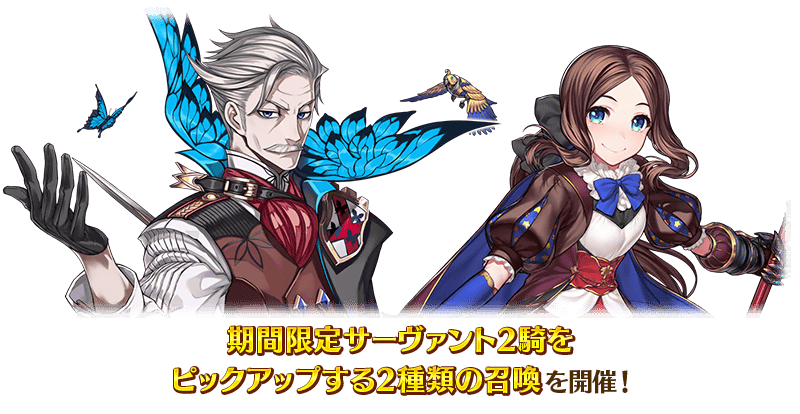
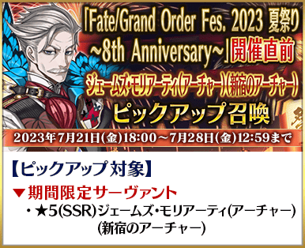
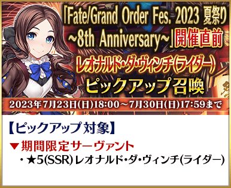
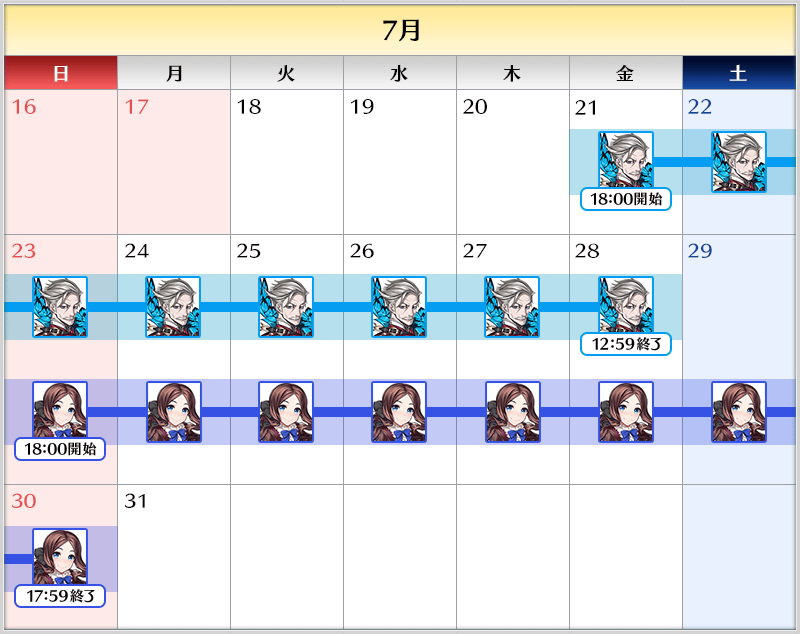
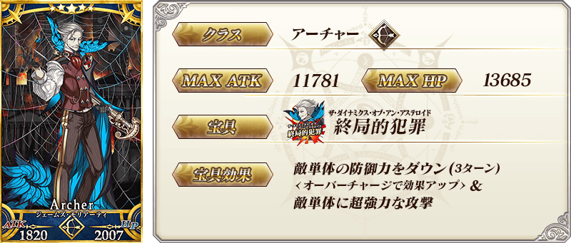
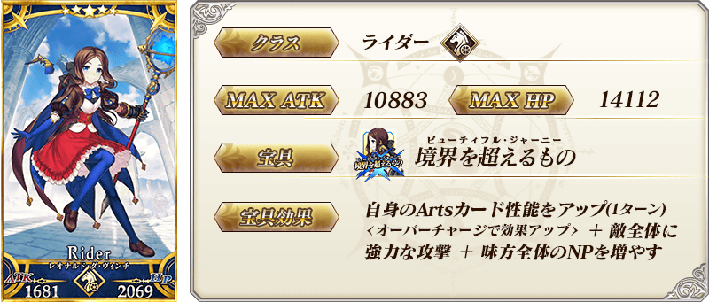
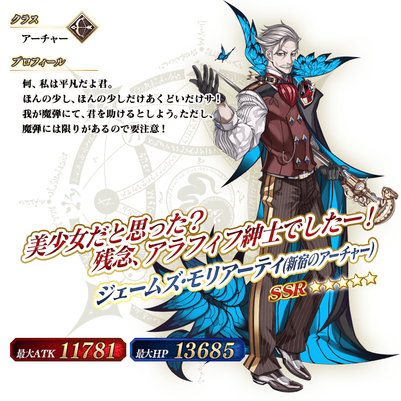
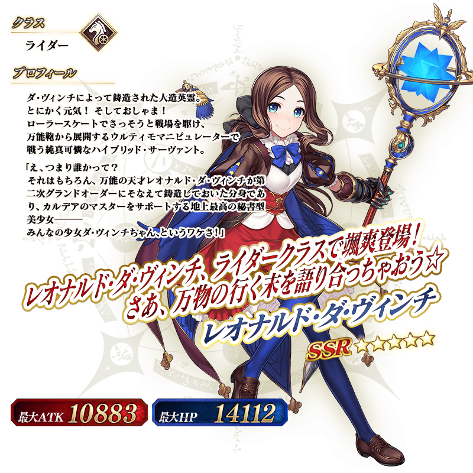
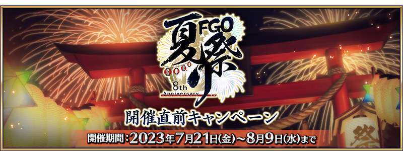

◆『「Fate/Grand Order Fes. 2023 夏日祭典 ～8th Anniversary～」舉辦前夕Pick Up召喚』期間◆
期間:2023年7月21日(五) 17:00～7月30日(日) 16:59

【Pick Up對象】
▼期間限定從者
・★5(SSR)詹姆斯・莫里亞蒂(Archer)(新宿的Archer)
・★5(SSR)李奧納多・達・文西(Rider)
為了記念『「Fate/Grand Order Fes. 2023 夏日祭典 ～8th Anniversary～」舉辦前夕宣傳活動』的舉辦，舉辦期間限定從者「★5(SSR)詹姆斯・莫里亞蒂(Archer)(新宿的Archer)」と「★5(SSR)李奧納多・達・文西(Rider)」Pick Up的2種召喚！
Pick Up期間中，Pick Up對象從者的出現機率提升！
詳情請在聖晶石召喚畫面左下的召喚詳細確認。
11次召喚中確定1張★4(SR)以上和確定1位★3(R)以上的從者！
※確定★4(SR)以上包含從者和概念禮裝。
※在2018年12月31日(二) 22:00以後新配信的主線故事及期間限定活動、一部份關卡、宣傳活動及召喚中，會顯示隱藏真名的對象從者真名。


◆『「Fate/Grand Order Fes. 2023 夏日祭典 ～8th Anniversary～」舉辦前夕Pick Up召喚』時間表◆

※請注意各Pick Up召喚的舉辦期間不同。
在本召喚的舉辦期間中預定實施維修。
維修中無法遊玩遊戲及進行召喚，敬請諒解。
關於維修的詳情會在日後再次報告。
【7月27日(四) 17:00追記】
預定本召喚的舉辦期間中的7月28日(五) 12:00～17:00實施維修。
維修中無法遊玩遊戲及進行召喚，敬請諒解。
關於維修的詳情請自下述URL確認。
維修公告(7/28 12:00實施)
◆『「Fate/Grand Order Fes. 2023 夏日祭典 ～8th Anniversary～」舉辦前夕Pick Up召喚』的注意◆
本次的召喚是每個召喚內容做為個別召喚舉辦的設定。
每10次召喚進行的「＋1次獎勵召喚」與用有償聖晶石進行的1天1次限定「1次召喚」會變成每個召喚內容分別計算。
本召喚中，只有在各召喚Pick Up的從者才是透過「確定召喚」召喚的對象。
【重要】
◆關於「確定召喚」功能◆
・期間限定Pick Up召喚中，在329次以內未召喚到Pick Up對象★5(SSR)從者情況，只限1次可在進行第330次的召喚時「確定召喚」必定1位Pick Up對象★5(SSR)從者。
・在同時間舉辦多個期間限定Pick Up召喚的情況，各召喚分別(每個召喚畫面頁面)計算召喚次數。另外，以每日交替Pick Up召喚的內容切換情況，各自分別計算召喚次數。舉例，每天23:00時間點變更召喚內容的Pick Up召喚情況，請注意在召喚內容變更的時間點會重置召喚次數的計算。
・請注意期間限定Pick Up召喚中滿足以下任何條件的話，在召喚畫面會顯示「Pick Up對象確定召喚已結束。(ピックアップ対象の確定召喚は終了しました。)」，該召喚中「確定召喚」功能變成無效。
・第329次前召喚到Pick Up對象★5(SSR)從者
・在第330次確定召喚到Pick Up對象★5(SSR)從者
・召喚次數在期間限定Pick Up召喚中用有償聖晶石、無償聖晶石、呼符進行召喚時都會計算。目前的召喚履歴可於該召喚畫面內確認。
※每10次召喚進行的「＋1次獎勵召喚」與用有償聖晶石進行的1天1次限定「1次召喚」也在計算的對象。
※每個召喚內容會分開計算「＋1次獎勵召喚」與1日1次限定的「1次召喚」。請注意在變更召喚內容那天的23:00，「＋1次獎勵召喚」和「1次召喚」的計算會被重置。
※透過有償聖晶石1個「1次召喚」的計算，也會在每天3:00重置。
・在進行11次召喚時滿足「確定召喚」功能條件的情況，在施行11次召喚中會確定召喚1位Pick Up對象★5(SSR)從者。屆時，11次召喚中保障的確定1張★4(SR)以上與確定1位★3(R)以上的從者會另外生效。
・期間限定Pick Up召喚結束後，無法繼承召喚次數到別的召喚。
・故事召喚、友情點數召喚為「確定召喚」功能的對象外。
◆關於1天1次限定的有償聖晶石召喚◆
※可以1天1次限定於期間限定召喚用有償聖晶石1個進行「1次召喚」。
※透過有償聖晶石1個的「1次召喚」，每天3:00重置。
※透過有償聖晶石1個的「1次召喚」對應的聖晶石召喚有好幾個的情況，各個召喚中1天各進行1次有償聖晶石1個的「1次召喚」。
※請注意就算進行透過有償聖晶石1個的「1次召喚」，不包含在1次獎勵的計算。
※聖晶石購入時賦予的「附贈(オマケ)」是做為無償聖晶石而不包含在有償聖晶石的個數，請注意別搞錯。另外，持有聖晶石的細項，可從持有道具一覧確認。
◆關於透過召喚獲得從者硬幣◆
在期間限定召喚、故事召喚、友情點數召喚中入手從者時，可獲得該從者的從者硬幣。
◆有關從者的注意◆
※下述的期間限定從者只會從成為Pick Up對象的召喚抽出。另外，Pick Up期間結束後，不會追加到故事召喚。
・★5(SSR)詹姆斯・莫里亞蒂(Archer)(新宿的Archer)
・★5(SSR)李奧納多・達・文西(Rider)
※關於隱藏真名尚未判明的從者，透過主線關卡的進行會讓從者及一部份寶具的名稱變化。
期間限定從者




介紹在本召喚Pick Up的2位從者寶具演出
【★5(SSR)詹姆斯・莫里亞蒂(Archer)(新宿的Archer)】
【★5(SSR)李奧納多・達・文西(Rider)】
其他還有，期間限定『「Fate/Grand Order Fes. 2023 夏日祭典 ～8th Anniversary～」舉辦前夕宣傳活動』的情報公開中！
關於詳情，請自下述橫幅確認。
■『「Fate/Grand Order Fes. 2023 夏日祭典 ～8th Anniversary～」舉辦前夕宣傳活動』詳細情報 